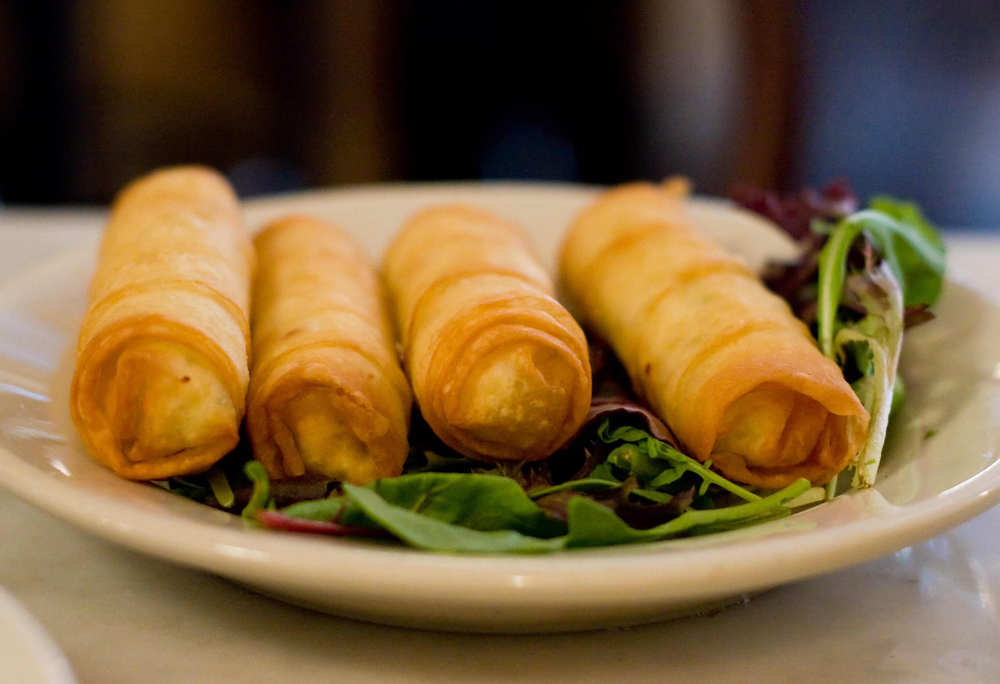

Sigara Böreği

Ev Yapımı Sigara Böreği Tarifi
Senelerdir güzel mutfağımızın vazgeçilmez ve çıtır çıtır lezzeti sigara böreği arifi
ile karşınızdayız!
Gerekli Malzemeler
- 3 adet yufka
- 400 g yağsız/kuru beyaz peynir veya lor peyniri
- Bir avuç kıyılmış maydanoz
- Kızartmak için bolca sıvı yağ
Hazırlanışı
- Peynir ve maydanozu karıştırın
- Her bir yufkayı 8'er adet üçgen elde edecek şekilde kesin
- Bu üçgenlerden birini alıp uzun kenarına uzunlamasına peynirli harçtan koyun
- Önce iki kenarından içe doğru katlayın ve ardından uzun kenarından incelen
yere doğru yuvarlayarak rulo yapın
- Üçgenin ucuna parmağınızla su sürüp böreğe yapıştırın
- Tüm içgen yufkalarınızı aynı şekilde hazırladıktan sonra kızgın yağda kızartın
Ve yemeğimiz hazır! Afiyet olsun.